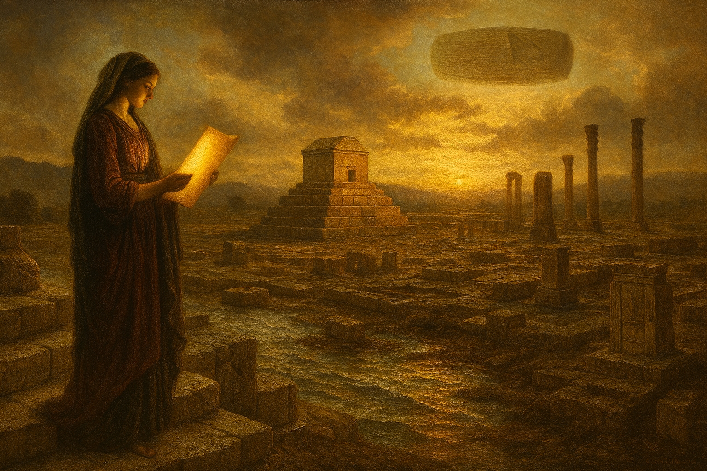
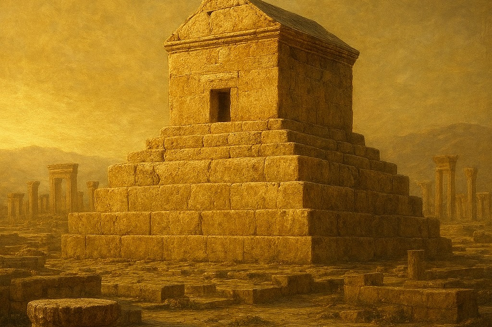
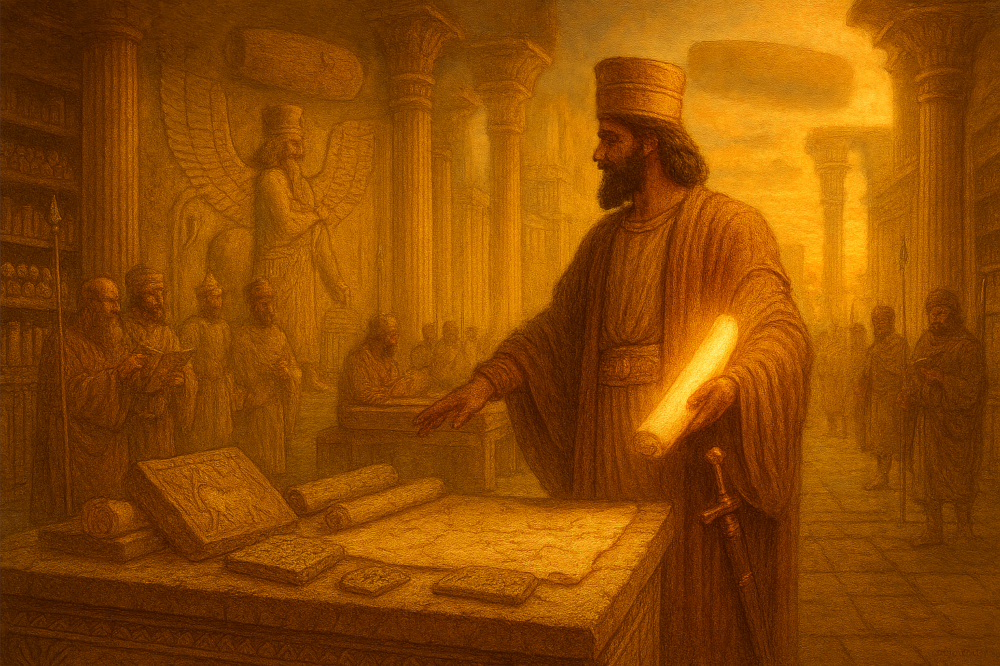
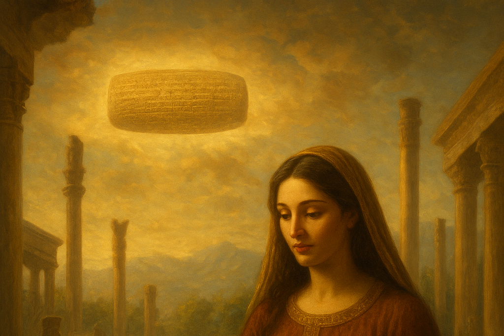
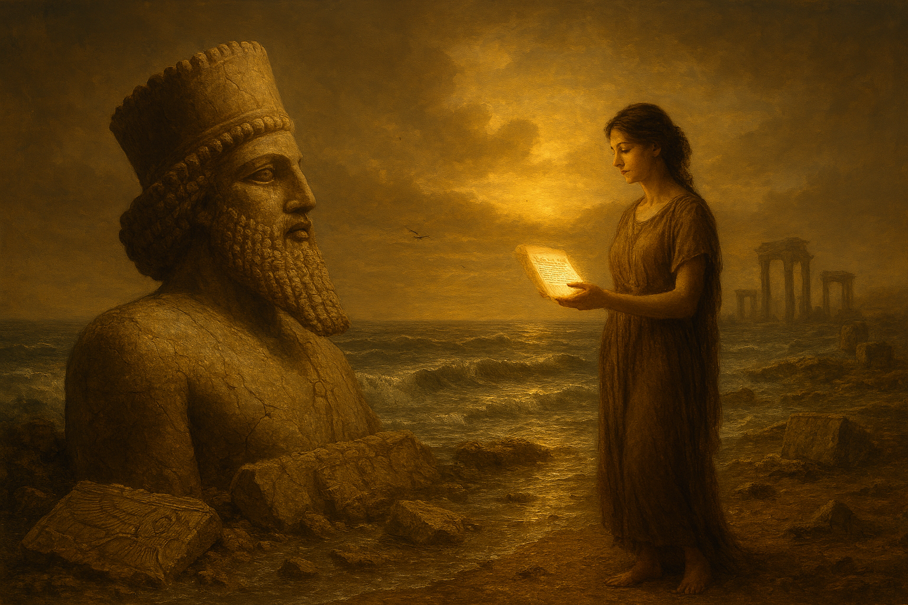
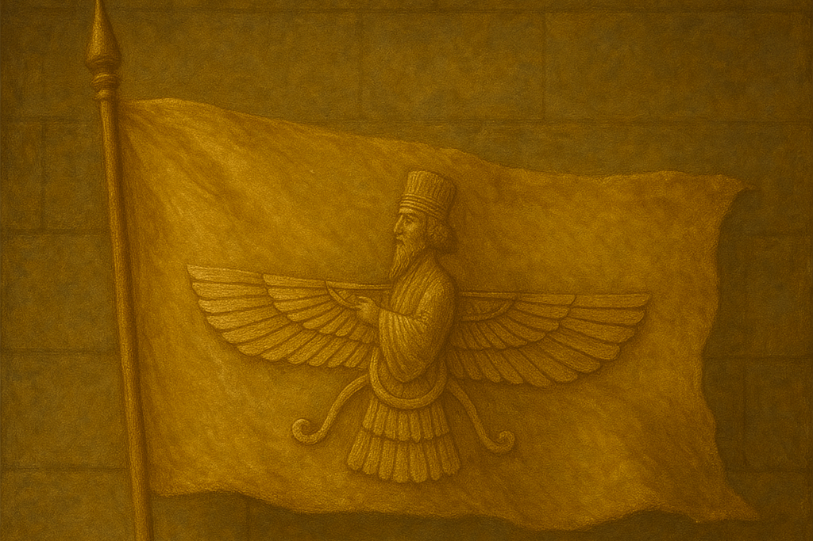
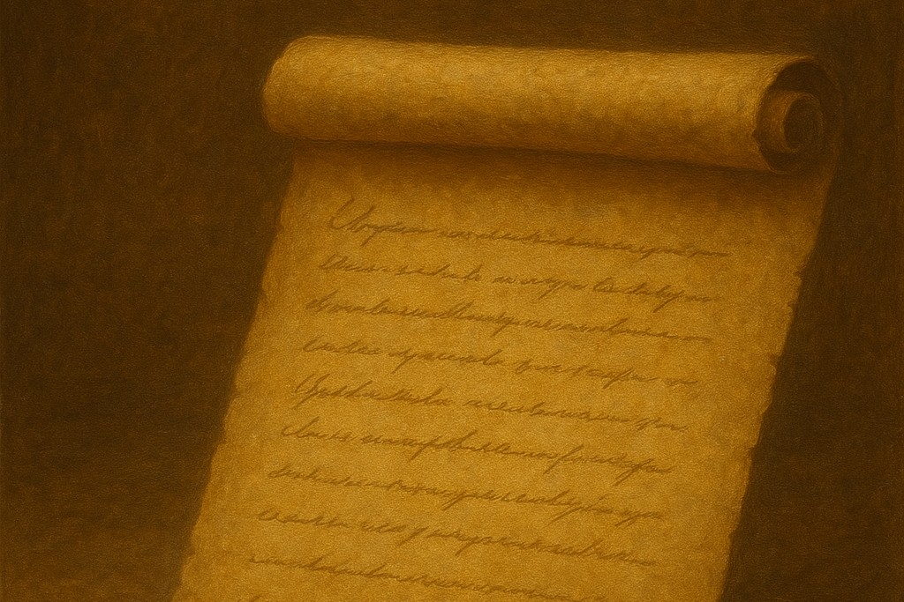
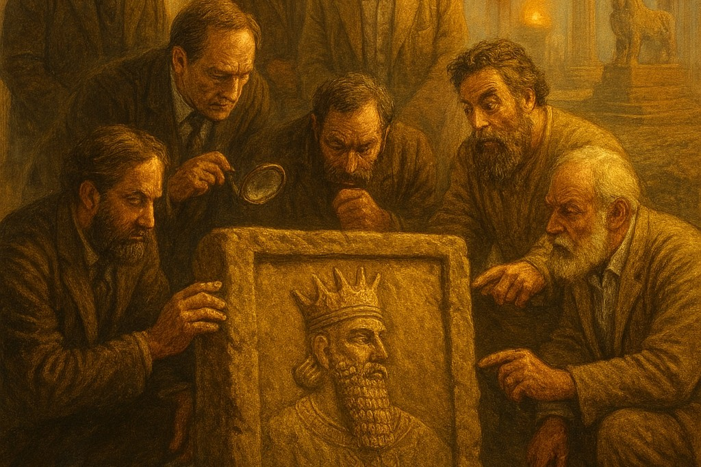

کوروش کبیر، بنیانگذار هخامنشیان، نه تنها سیاستمداری توانمند بود، بلکه سبک معماری ایرانی را نیز پایهگذاری کرد. پاسارگاد، نخستین پایتخت هخامنشی، مجموعهای از کاخها، باغها و سازههای حکومتی را در خود جای داده است. از مهمترین بناها میتوان به موارد زیر اشاره کرد: کاخهای کوروش: شامل کاخ بارعام، کاخ اختصاصی و باغهای سلطنتی بود که ترکیبی از سبکهای معماری محلی و خلاقیتهای نوین ایرانی را نشان میدهد. این کاخها نمونه اولیهای از سبک معماری هخامنشی هستند که بعدها در تختجمشید به کمال رسید. باغهای پاسارگاد (پردیسها یا پارادیسا): کوروش پایهگذار مفهوم باغهای پردیس بود، فضاهایی که طبیعت و معماری را با نظم هندسی و زیباییشناسی ایرانی ترکیب میکردند. ویژگیهای هنری و معماری: ستونها و پایههای سنگی، استفاده از سنگهای تراشخورده و تزئینات ساده اما متقارن، همگی نشاندهنده سبک ویژه ایرانی است که بر ثبات، شکوه و هماهنگی تأکید دارد. با تأسیس این بناها، کوروش سبک معماری ایرانی را پایهریزی کرد که بعدها در تختجمشید و دیگر شهرهای هخامنشی ادامه یافت.

آرامگاه کوروش در پاسارگاد قرار دارد و از شاخصترین بناهای دوران هخامنشی است. سبک معماری: آرامگاه دارای بنایی ساده اما شکوهمند است که ترکیبی از معماری ایرانی با تأکید بر سکون و عظمت را نشان میدهد. تاریخ ساخت: آرامگاه احتمالاً در زمان حیات یا پس از مرگ کوروش ساخته شده و ساده و بدون تزئینات زیاد طراحی شده است. ویژگیهای ساختاری: شامل سکویی سنگی و اتاق مقبرهای کوچک با سقف شیروانی و سازههای سنگی مستحکم. گزارش مورخان یونانی: آریان و استرابون درباره آرامگاه کوروش نوشتهاند که این بنا با احترام و دقت ساخته شده و حتی مردم محلی و شاهان بعدی از آن مراقبت میکردند. از نکات جذاب تاریخی، روایتهایی است که نشان میدهد آرامگاه کوروش همواره مورد احترام بوده و مراسم خاصی برای حفاظت و بزرگداشت آن برگزار میشده است.

کوروش تنها در عرصه معماری و سیاست مشهور نبود؛ آثار مکتوب او نیز اهمیت زیادی دارند: منشور کوروش: مهمترین سند مکتوب دوران او که اصول آزادی مذهبی و احترام به اقوام و ادیان مختلف را ثبت کرده است. کتیبهها و نوشتههای بابلی: این کتیبهها از فتح بابل و مدیریت حکومتی کوروش گزارش میدهند. گزارشهای مورخان باستان: نوشتههای هرودوت و دیگر مورخان، اقدامات سیاسی و اجتماعی او را به تصویر میکشند. نامهها و اسناد غیرمستقیم: برخی نوشتههای هخامنشی، آییننامهها و اسناد حکومتی به شکل غیرمستقیم از دوران او خبر میدهند. منشور کوروش بهدلیل ثبت رسمی حقوق بشر اولیه و قوانین انسانی، مهمترین اثر مکتوب بازمانده از دوران او به شمار میرود.
برای مطالب کامل تر در باب منشور کیلیک کنید

کوروش نه تنها یک شاه بود، بلکه میراث فرهنگی و معنوی عظیمی نیز بر جای گذاشت: تأثیر بر فرهنگ ایران: هویت ایرانی و اصول حکومتی مدرن بخشی از میراث اوست. نقش در شکلگیری هویت ایرانی: کوروش به عنوان نماد وحدت و آزادی در فرهنگ ایران شناخته میشود. تأثیر قوانین و سیاستها: آزادی ادیان و احترام به جوامع مختلف، تأثیری ماندگار بر نسلهای بعد داشت. احترام ادیان مختلف: یهودیان، بابلیان و اقوام شرق، همه او را به عنوان حکومتی عادل و محترم به یاد داشتهاند. این بخش مستقیماً جایگاه کوروش را در فرهنگ عمومی و ذهن مردم تثبیت میکند.

کوروش بنیانگذار نخستین امپراتوری چندملیتی جهان بود: پایهگذاری امپراتوری چندملیتی: جمعآوری اقوام مختلف تحت یک حکومت مرکزی. نظام اداری و حکومتی: تقسیم کشور به ساتراپیها و مدیریت مؤثر هر منطقه. شیوه مدیریت سرزمینها: آزادی ادیان، عدالت و امنیت گسترده. راه شاهی: زیرساختهای ارتباطی و امنیتی که توسط داریوش تکمیل شد. این اصول حکومتی، میراثی هستند که پس از مرگ کوروش نیز ادامه یافتند و پایهای برای دوام هخامنشیان شدند.

کوروش تأثیری جهانی داشته و در تاریخ غرب و شرق مورد توجه قرار گرفته است: نگاه مورخان غربی: بسیاری او را به عنوان فرمانروایی عادل و پیشگام آزادی مذهبی میشناسند. تأثیر بر قانونگذاری و مدیریت: منشور کوروش الگویی برای قوانین بشردوستانه و حکومتی شد. جایگاه در ادبیات و تاریخنگاری غرب: از دیرباز، موضوع کتابها و مقالات تاریخی و فلسفی بوده است. نقش در اندیشههای آزادیخواهانه: اصول او در حکومتداری، الهامبخش اندیشههای انسانی و حقوق بشر بوده است. این بخش برای مخاطب جهانی جذابیت زیادی دارد و جایگاه کوروش را فراتر از ایران نشان میدهد.

آثار دوران کوروش در موزههای معتبر جهان نگهداری میشوند: منشور کوروش: در موزه بریتانیا نگهداری میشود. آثار دوره کوروش در ایران: شامل کتیبهها، قطعات معماری و اشیای باستانی. آثار در موزههای بینالمللی: لوور، برلین و شیکاگو نمونههایی از هنر و اسناد هخامنشی دارند. اشیای منسوب به پاسارگاد: بخشی از میراث معماری و باستانشناسی ایران. هر موزه میتواند زیرصفحهای جداگانه برای معرفی این آثار داشته باشد.

باستانشناسان طی چند قرن پژوهشهای ارزشمندی انجام دادهاند: نتایج حفاریهای پاسارگاد: کشف سازهها، کاخها و باغها. کشفیات مهم عصر کوروش: آثار معماری، ستونها و قطعات تزئینی. تاریخچه کاوشها: هرمان، اشتاین، جورج کامرون و دیگر باستانشناسان تحقیقات مهمی انجام دادهاند. یافتههای هنری و معماری تازه: شناخت بهتر سبک هخامنشی و تأثیر کوروش بر هنر و معماری ایران باستان. این بخش علمیتر است و ارزش سایت را برای علاقهمندان و پژوهشگران بالا میبرد.